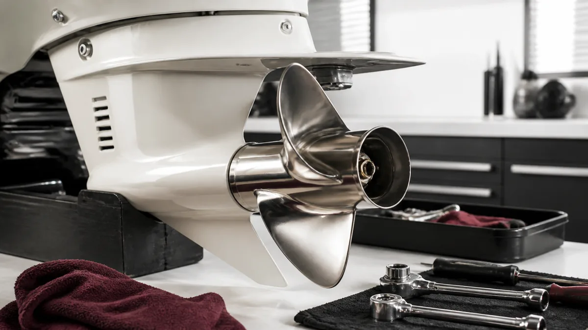

ЛОДКИ · 05
Винт и редуктор: осмотр перед сезоном
Винт передаёт тягу, а редуктор работает под нагрузкой: эти два узла стоит проверить до воды.

Осмотрите винт
- Ищите сколы, загнутые кромки, трещины и следы удара о препятствие.
- Снимите винт и убедитесь, что под ступицей нет лески или шнура.
- Проверьте шплинт и состояние шлицев.
Проверьте редуктор
Контролируйте уровень и состояние масла. Молочный оттенок, вода или металлическая пыль — повод не откладывать диагностику.
После удара о препятствие
Даже если винт выглядит целым, проверьте вал и уплотнения редуктора. Вибрация, которая появилась после удара, не лечится увеличением оборотов: она быстро передаёт нагрузку на соседние узлы.
Признаки проблемы
- Гул или щелчки при включении передачи.
- Молочное масло в редукторе.
- Новая вибрация и потеря привычной скорости.
Полезно после проверки
После установки винта убедитесь, что крепёж соответствует инструкции мотора. Не держите повреждённый винт как запасной без осмотра: он может понадобиться именно тогда, когда надёжность критична.